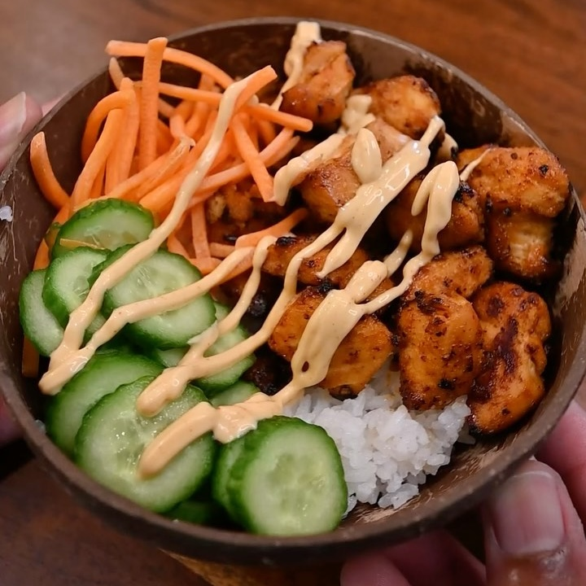

Bowl Salmón
Ingredientes:
- Arroz jazmín
- 2 piezas de salmón
- Pepino
- Zanahorias
Salsa para 2 filetes de salmón:
- 2 cucharadas de salsa BBQ
- 1/2 cucharada de aceite de oliva
- 1/2 cucharada de miel
- Ajo en polvo
- Paprika
- Pimienta
- Sal
Instrucciones:
- Lava y cocina el arroz jazmín en una arrocera.
- Corta los filetes de salmón en cubos (sin piel es más fácil de trabajar).
- Mezcla la salsa y cubre los cubos de salmón con ella.
- Cocina en el aire a 390°F (unos 200°C) durante 7-10 minutos, hasta que esté cocido a tu gusto.
- Añade las verduras y la mayonesa picante.